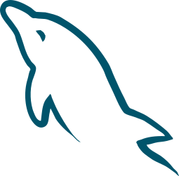
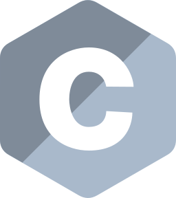

Sobre
Atualmente trabalho como analista de suporte naSolus IT, trabalhando com manutenção de sistema legado em Delphi, PHP e Oracle SQL, além de ser entusiasta no desenvolvimento web com python.
Minhas stacks



